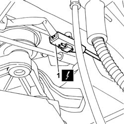
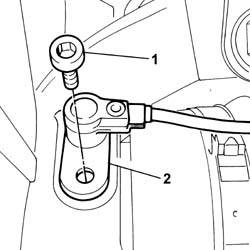

3340A30 RPM SENSOR (ONE) OF ONE L/H OR R/H FRONT WHEEL - R+R
- Path
- Procedures > 33 BRAKES > 3340 ANTI-LOCK BRAKE SYSTEM (ABS) > 3340A ABS CHECK/ADJUSTMENT DEVICES > 3340A30 RPM SENSOR (ONE) OF ONE L/H OR R/H FRONT WHEEL - R+R
- Kind
- repair procedure (removal / refitting; the operation number is the code)
- Applies to
- all engines; all production periods
- Interactive page
- https://sloeber94.github.io/elrnDB-fUlss/en/#/179007319
Applies to: all engines; all production periods
 Removing
Removing
 Refitting
RefittingOp. 5530B56 BATTERY DRIP TRAY COVER - R.R.
- Disconnect the negative battery terminal.
- Position the vehicle on a lift.
1. Disconnect the electrical connection.
- Release the wiring from the mountings.

Applies to: all engines; all production periods
1. Undo the retaining bolt.
2. Extract the rpm sensor and remove it.

Applies to: all engines; all production periods
Refitting
Removing- Position the rpm sensor and tighten the fixing bolt.
- Position the wiring and secure it using the special fastenings.
- Connect the electrical connection.
- Remove the vehicle from the lift.
- Connect the negative battery terminal.